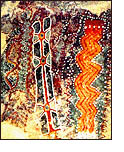
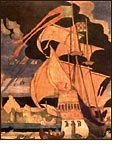
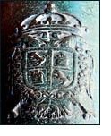
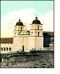
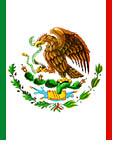
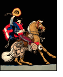
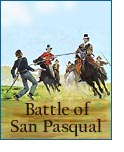
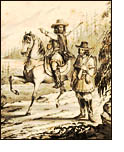
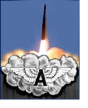
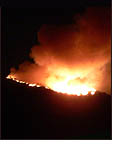

A Time Line

Chumash
The ancestors of the Chumash settle the area that, 13,000 years later, became Santa Barbara, Ventura, and southern San Luis Obispo Counties.
By the time of the Spanish explorations, the Chumash population had grown to 10,000-18,000 souls in one hundred fifty four independent villages. The Chumash language has subgroups; Barbareño, Inezeño, Interior Chumash, Island Chumash, Obispeño, Purisimeño, and Ventureño. All these Chumash languages are related, all are different.

First Explorations
Vasco Núñez de Balboa discovered of the Pacific Ocean from the west coast of Central America, 1513.
Hernando Cortés lands at La Paz in Baja California and establishes a temporary colony there, 1535.
Franciso Vasquez de Coronado explores the American Southwest, possibly crossing the Colorado River into California, 1540.
Juan Rodriguez Cabrillo encounters the Los Angeles basin, 1542.
Cabrillo drops anchor near present-day San Diego, 1542.
Sir Francis Drake explores the California coast just north of San Francisco Bay (Nova Albion), 1579.

Spanish Authority & Baja California
By 1767, Jesuit missionaries on the peninsula of Baja (Lower) California had established approximately twenty-three missions over a period of seventy-two years.
Threatened by rumors that the Jesuits had amassed wealth and power, Spanish King Carlos III orders the expulsion of the Jesuits from Baja California and elsewhere, 1767.
The Jesuits missions are offered to the Franciscans, 1767.
Gaspar de Portola is appointed governor of California (Baja and Alta), 1767.
Blessed Junípero Serra was named Padre Presidente of the Missions of Loreto in Baja California.

Spanish Mission Period in Alta California
Padre Junípero Serra established Mission San Diego de Alcala in Alta California, 1769.
See full list of Alta California Missions.
El Pueblo de Nuestra Señora la Reina de los Ángeles sobre El Rio Porciuncula (City of Los Angeles) founded, 1781.
Santa Barbara Royal Presidio, founded 21 April 1782.
Mission San Buenaventura (now in Ventura County) founded 31 March 1782.
Mission Santa Barbara, founded 4 December 1786.
Mission La Purisíma Concepción founded 8 December 1787.
Charles III (Carlos III de Borbon) King of Spain, dies, 1788.
Mission Santa Inés, founded 17 September 1804.
Earthquake, extensive damage and destruction to missions in Santa Barbara County, and a report of seismic sea waves, 1812.
Fort Ross, north of San Francisco, was established by the Russian-American Company, 1812.
The Spanish Cortes (a legislative assembly) decreed that all missions which had then been in existence for ten years should at once be turned over to bishops, and the Indians attached to them made subject to civil authority, 1813.
This Secularization decree was not published in California until 1820, and it proved ineffective.

Méxican Secularization Period
México wins independence from Spain, 1821
Don Augustin de Iturbide becomes Méxican Emperor Augustin I, 1821.
California passes under jurisdiction of the Méxican Emperor, 1821.
México became a republic, 1824.
Failed Chumash uprising at Mission Nuestra Señora de la Soledad, 1824.
First Battle of Cahuenga Pass, 1831. Revolt by Pio Pico, Abel Stearns, and others at Cahuenga Pass in San Fernando Valley led to exile of California Governor Manuel Victoria.
Mexican Congress passes An Act for the Secularization of the Missions of California, or Prevenciónes de Emancipacion, for the secularization of the missions, 17 August 1833.

Rancho Period
The Mission Lands for the most part were seized, sold, auctioned, or granted to private individuals for service. The days of the Mission economy were over. The Rancho economy with its Californios elite and their cattle driving vaqueros came to the forefront, 1834-1846.
Estimated Chumash population, 2,471, 1832.
Richard Henry Dana, Jr. sails to Monterey and San Francisco Bay, and writes of attending a wedding fandango in Santa Barbara in his book, Two Years Before the Mast, 1835.

Méxican ~ American War
United States declared war on México 23 May 1846.
John Fremont launched the Bear Flag Revolution, 14 June 1846.
Battle of San Pasqual (now San Diego County), 6 December 1846.
General Andres Pico and the Californios surrender to General John C. Fremont and signs the Treaty of Campo de Cahuenga, (at Ciudad de Los Angeles) 16 January 1847.
California Governor Pio de Jesus Pico returns from México, 1847.
Treaty of Guadalupe-Hidalgo is signed, México cedes Texas, the southwest, and Alta California to the United States, 30 May 1848.

American Period, from 1846
Gold! The Discovery at Sutter’s Mill, 1848.
The 49ers and the Gold Rush, 1849.
Santa Barbara County created 18 February 1850.
California Statehood, 9 September 1850.
Point Conception Lighthouse was first activated 1 Feb 1856.
Great Fort Tejon Earthquake, 9 January 1857. On the San Andreas fault, felt in Santa Barbara, but did not cause significant damage there.
Ventura County was created from part of Santa Barbara County, 22 March 1872.
Townsite plat of Grangerville (later known as Central City, finally as Santa Maria) was recorded in 1875.

From Movies to Missiles
Santa Barbara State Normal School of Manual Arts and Home Economics became a state institution, 1909; name changed to Santa Barbara Normal School, 1919; name changed to Santa Barbara State Teachers College, 1921; school became Santa Barbara State College, 1935; name changed to University of California, Santa Barbara (UCSB), 1944.
Flying A Studios (a.k.a. American Film Manufacturing Company), maker of silent movies, on Mission Street from Chapala to Anacapa in Santa Barbara, 1912-1919. They made mostly western movies.
First Old Spanish Days Fiesta in Santa Barbara, 1924.
Santa Barbara Earthquake, 29 June 1925.
Point Arguello Earthquake, damaged nearby coastal cities of Lompoc and Santa Maria, 4 November 1927.
Matilija Canyon Fire, Santa Barbara & Ventura Counties, 1932
Camp Cooke (United States Army) organized 1941.
Camp Cooke, transfered to the United States Air Force, 1957. Renamed Vandenberg Air Force Base.

New Millennium Up in Smoke
Zaca Wildland Fire, Santa Barbara County, 2007.
Tea Fire, Santa Barbara & Montecito, 2008
|